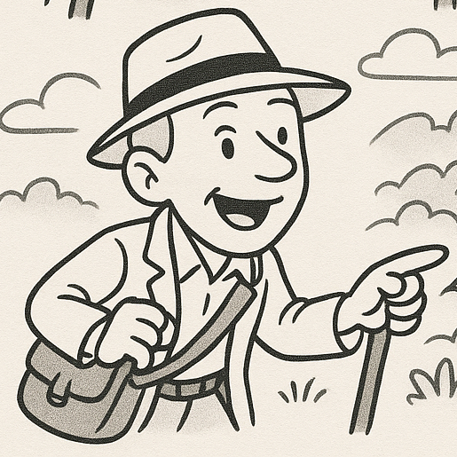

Hidden Camino
You may spot me along the Camino de Santiago, Panama hat slightly askew, linen jacket crumpled from too many miles, muttering about Latin etymologies or Neolithic cairns. I’m a professional linguist with a background in modern and historical languages, now turned wanderer of ancient paths.
I walk the old roads of Galicia in search of forgotten stories and suspiciously shaped stones. Along the way, I share tales from prehistory to the present, tracing the echoes of lost dialects, medieval pilgrims, and Bronze Age builders, all with the air of a befuddled English archaeologist. Some say I got lost in a footnote sometime in the 1980s and never quite found my way out.
Welcome. Bring good boots and better questions.
Who’s that man in the hat?
 I’m Richard — translator, linguist, professional word-wrangler, and full-time resident of rural Galicia. I live right on the Camino Francés, near kilometre 62, where the official route passes through land that’s been walked for thousands of years—long before Saint James made his appearance.
I’m Richard — translator, linguist, professional word-wrangler, and full-time resident of rural Galicia. I live right on the Camino Francés, near kilometre 62, where the official route passes through land that’s been walked for thousands of years—long before Saint James made his appearance.
I moved here from England to restore an old farm and ended up digging through more than just the earth. The layers of this landscape go deep: Bronze Age tombs, Roman tracks, medieval legends, and the day-to-day rhythms of modern village life. Bin lorries, bureaucracies, and all.
I started offering these walks because people kept asking what it’s really like to live here — and because the stories I found were too good not to share.
Are we nearly there yet?
Each walk is small-group, informal, and based on real lived experience: both mine and that of the thousands who came before us.
We meet at Taverna Casanova between km 61.628 and km 61.504 at 9.30am for a 9.45 departure. We walk through woods and past battlefields, stopping to talk about everything from enchanted springs to septic tanks. Expect wildflowers, ruins, cows, and the occasional bit of light industry. We’ll explore forgotten churches, sunken lanes, and the bits the yellow arrows don’t show you.
We get to Melide in time for lunch. You may continue on to Arzua, but most people seem to do Palas de Rei to Melide as a short day, so we can take our time on our walk. It's 5½ miles from Casanova to Melide.
I’m hungry
We meet at Terraza Casanova, which does an excellent breakfast. Arrive early so you've time to eat it. There are plenty of cafés on the way to Melide, where and when we stop is up to the group on the day. I can take you to my favourite pulpeira in Melide.
Is that all?
If you’ve a specific interest—language, mythology, stonework, land use, or local oddities—let’s put together something that suits. I’m also open to fireside chats or on-site storytelling at Fonte de Mouros.
I need a wee
Plenty of trees around.
FAQ – Frequently Asked Questions
- Is this a religious tour?
- No. But it is reverent in the old sense: we pay attention. We honour the past, notice the present, and talk about what matters—be it sacred stones or the price of diesel.
- What will we talk about?
- The Mouros. The Romans. Old place names. That church up there. Clearing brambles. Conveyancing. Where the bins go. What makes a land feel alive.
- Is it in English?
- Yes, with occasional Galician, Latin, and some well-placed swearing in Spanish. All lovingly explained. I don’t offer a bilingual tour, but I can chat in French, German or Spanish if required.
- Can I bring my kids or dog?
- Yes, if they’re well-behaved and curious. I’ve nothing against the chaotic, but I’ll be talking a lot and wandering off into tangents.
- Is this an official tour?
- No. This is a wandering commentary, not a licenced guided tour. Bring boots, an open mind, and a notebook.
- How much is it?
- While the walk is offered freely, thoughtful travellers often insist on contributing. I won’t argue. You're welcome to donate what you feel it’s worth — whether in euros, pounds, wine, or second-hand books on medieval geology. If you’d like to make a donation, you can use Revolut or just hand me something crumpled in person.
Contact
If you're curious, lost, or feel drawn to walk the old ways, send me a message. Message via WhatsApp (preferred) Message me on WhatsApp. Please let me know you're coming. While there's strictly speaking no need to book, I won't turn up if I think no-one's coming.